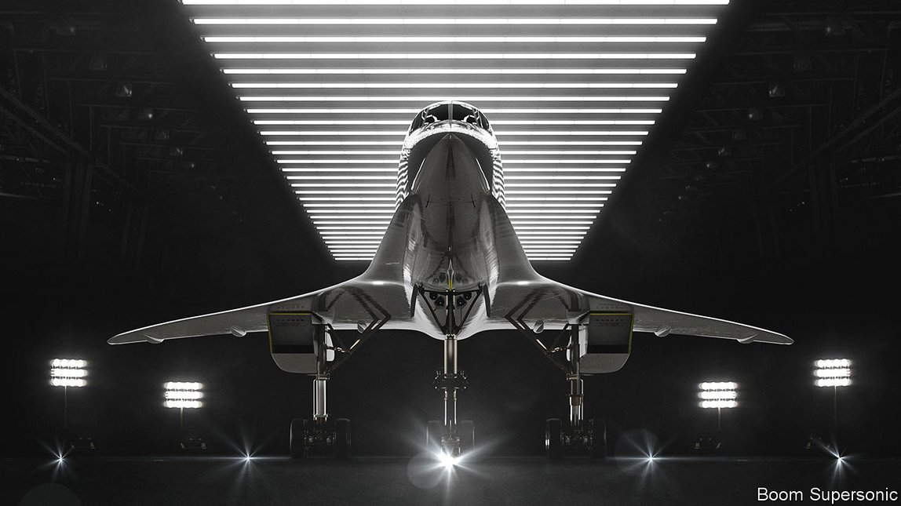

2021-06-30T15:26:02+00:00
音爆时代
商用飞机会再度突破音障吗？
也许会，但近几年还不行
在服役的27年里，协和式超音速客机成了遨游世界的光鲜生活的象征。不过与它优雅的三角翼相伴的是源自军用的高油耗发动机震耳欲聋的噪音；机上供应香槟，但客舱逼仄，座位狭小；它以两倍于音速的速度飞行，让跨越大西洋所需的时间差不多减去一半，不过票价也比一般商务舱高出一倍。在发生了2000年的致命空难和2001年9月11日的恐怖袭击之后，2003年协和式飞机完成告别飞行，信徒们流下了眼泪。大多数商务旅行者只是耸了耸肩。
“它继承了协和式客机的遗风”，美国创业公司Boom Supersonic的首席执行官布莱克·绍尔（Blake Scholl）这样描述公司正在研发的飞机“1号序曲”（Overture 1）。它将最多能搭载88名乘客，以1.7倍音速飞行，同时还会避免协和式客机的缺点。这在美联航看来很有吸引力。6月3日，该公司同意购买15架飞机，另取得35架的优先购买权。日本航空和维珍航空共拥有30架飞机的优先购买权。绍尔承诺，过去只有富人们才负担得起的超音速机票现在“人人都买得起”，或者至少是那些在同样航线上买得起商务舱的人。一号序曲更符合空气动力学，材料更佳，引擎更强，因而运营成本比协和低75%。民用发动机会让飞机在相对安静的环境中飞行，并会使用可持续燃料，以免被环保主义者指摘。机舱模型看起来足够舒适高档。
瑞银看好超音速旅行。它预计到2040年这一市场的累计规模将在800亿至2800亿美元之间，具体数字待看监管障碍以及飞机是否按时、按预算交付和按预期运营。绍尔现在盯着的是这一预测区间的上限，这一规模下可以消化1200架单价2亿美元的1号序曲。之后，他希望逐步造出更大的飞机，价格更低，速度更快。另一家有超音速雄心的美国公司Spike正在开发一种18座的低音爆公务机。
这会不会是空中楼阁？对美联航和寻求更多融资的Boom公司来说，留有较长的兑现期并时不时做一些补充声明是一种不错的自我宣传。目前还不太可能有大量现金交易。1号序曲要到2029年才开始服役。另一家公司Aerion希望造出八座到十座的公务机，尽管获得了超过110亿美元的订单和美国飞机制造巨头波音的支持，却在5月出人意料地倒闭了。
美国法规禁止在本土超音速飞行，这就排除了穿越北美的航行，而这里是众多商务旅行者和世界上大多数公务机的所在。摩根士丹利认为，Aerion公务机1.2亿美元的单价是类似的亚音速飞机价格的两倍，即使是超级富豪也不愿意花这么多钱来让自己的跨大西洋旅行缩短四个小时。波音自己并没有超音速飞机的计划，这一点很能说明问题。它的欧洲头号竞争对手空中客车公司（曾参与协和式客机项目）也没有。这两家垄断了喷气式客机的巨头认为，更便宜、更清洁的飞行比速度更重要。对于普通旅行者来说，突破音障还需时日。
2021-06-30T15:26:02+00:00
Boom time
Will commercial jets break the sound barrier once again?
Maybe. But not for a few years yet
FOR 27 YEARS Concorde epitomised jet-setting glamour. Yet its elegant delta wings came with the ear-splitting noise of thirsty military-derived engines; champagne was served in a cramped cabin with small seats; and cruising at twice the speed of sound, which just about halved the time for an Atlantic crossing, cost twice the regular business-class fare. Devotees shed a tear after its farewell flight in 2003, following a fatal crash in 2000 and the terrorist attacks of September 11th 2001. Most business travellers shrugged.
“Picking up where Concorde left off” is how Blake Scholl, chief executive of Boom Supersonic, describes Overture 1, the jet which the American startup is developing. It will propel up to 88 passengers 1.7 times as fast as sound while avoiding Concorde’s drawbacks. This appeals to United Airlines. On June 3rd it agreed to buy 15 planes, with an option for 35 more. JAL and Virgin Atlantic have options to acquire 30 between them. Mr Scholl promises that supersonic fares, once only for the very rich, will now be “for everyone”—or at least those who can afford to fly business on the same route. Better aerodynamics, materials and engines are intended to keep operating costs 75% below those of Concorde. Civilian engines will propel the aircraft in relative quiet and use sustainable fuel to head off criticism from environmentalists. Mockups of the cabin look suitably plush.
UBS, a bank, thinks supersonic travel has a future. It puts the cumulative size of the market at between $80bn and $280bn by 2040, depending on regulatory hurdles and whether the planes are delivered on time, on budget and operate as promised. Mr Scholl is eyeing the upper end of that range, a potential market for 1,200 Overture 1s at $200m each. Then he hopes to make progressively bigger craft offering lower fares and higher speeds. Spike, another American firm with supersonic ambitions, is developing an 18-seat business jet that doesn’t make a loud boom.
Is this pie in the sky? A distant caveat-strewn commitment is good publicity for United and for Boom when it seeks more funding. It is unlikely that much cash has yet changed hands. Overture 1 is not set to enter service until 2029. Aerion, another firm that hoped to build an 8-10-seat business jet, unexpectedly folded in May despite orders worth more than $11bn and backing from Boeing, America’s giant aeroplane-maker.
National regulations banning supersonic speeds over land rule out trips across North America, home to lots of business travellers and most of the world’s business jets. Morgan Stanley, a bank, reckons that at $120m, double the price of a similar subsonic plane, even the ultra-rich wouldn’t pay to cut four hours from a transatlantic trip. Tellingly, Boeing itself has no plans to go supersonic. Nor has Airbus, its European arch-rival (which was involved in the Concorde project). The passenger-jet duopoly reckons that cheaper and cleaner flying is more important than speed. Breaking the sound barrier is still some way off for the ordinary punter. ■
2021-06-30T15:26:02+00:00
音爆時代
商用飛機會再度突破音障嗎？
也許會，但近幾年還不行
在服役的27年里，協和式超音速客機成了遨遊世界的光鮮生活的象徵。不過與它優雅的三角翼相伴的是源自軍用的高油耗發動機震耳欲聾的噪音；機上供應香檳，但客艙逼仄，座位狹小；它以兩倍於音速的速度飛行，讓跨越大西洋所需的時間差不多減去一半，不過票價也比一般商務艙高出一倍。在發生了2000年的致命空難和2001年9月11日的恐怖襲擊之後，2003年協和式飛機完成告別飛行，信徒們流下了眼淚。大多數商務旅行者只是聳了聳肩。
“它繼承了協和式客機的遺風”，美國創業公司Boom Supersonic的首席執行官布萊克·紹爾（Blake Scholl）這樣描述公司正在研發的飛機“1號序曲”（Overture 1）。它將最多能搭載88名乘客，以1.7倍音速飛行，同時還會避免協和式客機的缺點。這在美聯航看來很有吸引力。6月3日，該公司同意購買15架飛機，另取得35架的優先購買權。日本航空和維珍航空共擁有30架飛機的優先購買權。紹爾承諾，過去只有富人們才負擔得起的超音速機票現在“人人都買得起”，或者至少是那些在同樣航線上買得起商務艙的人。一號序曲更符合空氣動力學，材料更佳，引擎更強，因而運營成本比協和低75%。民用發動機會讓飛機在相對安靜的環境中飛行，並會使用可持續燃料，以免被環保主義者指摘。機艙模型看起來足夠舒適高檔。
瑞銀看好超音速旅行。它預計到2040年這一市場的累計規模將在800億至2800億美元之間，具體數字待看監管障礙以及飛機是否按時、按預算交付和按預期運營。紹爾現在盯着的是這一預測區間的上限，這一規模下可以消化1200架單價2億美元的1號序曲。之後，他希望逐步造出更大的飛機，價格更低，速度更快。另一家有超音速雄心的美國公司Spike正在開發一種18座的低音爆公務機。
這會不會是空中樓閣？對美聯航和尋求更多融資的Boom公司來說，留有較長的兌現期並時不時做一些補充聲明是一種不錯的自我宣傳。目前還不太可能有大量現金交易。1號序曲要到2029年才開始服役。另一家公司Aerion希望造出八座到十座的公務機，儘管獲得了超過110億美元的訂單和美國飛機製造巨頭波音的支持，卻在5月出人意料地倒閉了。
美國法規禁止在本土超音速飛行，這就排除了穿越北美的航行，而這裡是眾多商務旅行者和世界上大多數公務機的所在。摩根士丹利認為，Aerion公務機1.2億美元的單價是類似的亞音速飛機價格的兩倍，即使是超級富豪也不願意花這麼多錢來讓自己的跨大西洋旅行縮短四個小時。波音自己並沒有超音速飛機的計劃，這一點很能說明問題。它的歐洲頭號競爭對手空中客車公司（曾參與協和式客機項目）也沒有。這兩家壟斷了噴氣式客機的巨頭認為，更便宜、更清潔的飛行比速度更重要。對於普通旅行者來說，突破音障還需時日。